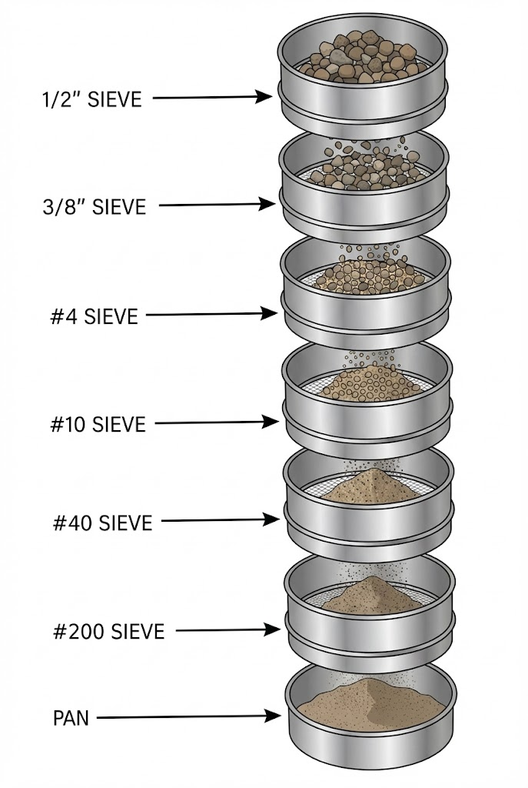
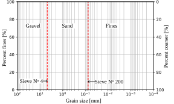
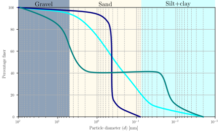
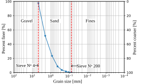
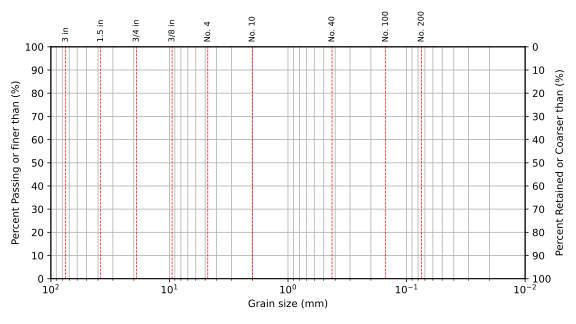

Recap
- We learned how to calculate the bulk, dry, saturated, and buoyant unit weight of soil.
- We learned how to calculate water content and degree of saturation.
-
We learned how to calculate void ratio and porosity.
Contents
- Sieve analysis
- Hydrometer test
- Soil fractions
- Grain size metrics
- Gradation coefficients
Objectives covered in this lecture
- [O1]: Develop an understanding of soil phase relations, index properties, and their application to soil classification and compaction.
After this lecture we will able to:
- Plot a grain size distribution curve.
- Determine the the percent of gravel, sand, and fines in a soil.
- Determine particle sizes and the gradation coefficients.
Particle size
![A diagram illustrating soil particle size classifications and visual comparisons. The top section features a horizontal scale dividing soil types by particle diameter, marked with specific measurement thresholds:
Boulders: Larger than 300 mm (1 ft).
Cobbles: Between 75 mm (3 in) and 300 mm.
Gravel: Between 4.75 mm (No. 4 sieve) and 75 mm.
Sand: Between 0.075 mm (No. 200 sieve) and 4.75 mm.
Silt + Clay: Smaller than 0.075 mm.
An overhead bracket labels Gravel and Sand as 'Coarse,' while a second bracket labels Silt + Clay as 'Fine.'
Below the chart, visual illustrations depict the relative sizes of the particles:
Gravel is shown as a large, fist-sized rock.
Sand is shown as a smaller, pebble-sized object.
Silt is shown as a tiny, single dot.
Clay is indicated by an arrow pointing to blank space with the text 'Invisible to the eye.'](../../grain_size/FiguresGeneral/grain_size_scale.svg)
Grain size the engineering behavior of soils.
Particles can be smaller than 2 \(\mu\)m or larger than 2m.
Particles can be smaller than 2 \(\mu\)m or larger than 2m.
Water effects soil differently depending on texture. soils are more affected by water by affecting the interactions between mineral grains. We use two terms:
Ability to be
Ability to
Particle shape
Particle shape plays an important role on the of soils, particularly of . Particle shape can be visually classified using Powers (1953).
![Powers (1953) chart illustrating particle shape classification based on two factors: sphericity and roundness. The chart is a grid with two rows labeled 'high sphericity' and 'low sphericity' on the vertical axis, and six columns labeled along the bottom axis: very angular, angular, sub-angular, sub-rounded, rounded, and well rounded. Inside the grid, line drawings of rocks depict these characteristics. The 'high sphericity' row shows grains that are compact and roughly equal in dimension, while the 'low sphericity' row shows grains that are elongated or oval. Moving from left to right, the edges of the grains transition from sharp and jagged to smooth and circular.](../../grain_size/FiguresGeneral/shapes.svg)
Participation question 2.2
What is the shape classification of the sand shown in the picture below?

Participation question 2.3
What is the shape classification of the sand shown in the picture below?
![A microscopic close-up of diverse and colorful biogenic sand grains and microfossils set against a black background. The assortment features distinct biological and mineral fragments, including a large, curved, brownish claw-like tip on the left; a pitted, bright orange fragment; and a central, faceted, translucent blue-green grain. On the right, several elongated, ribbed spines (likely sea urchin spines) appear in shades of pale green, purple, and white. A porous white coral-like structure and a tiny spiral shell are also visible near the bottom.](https://www.intelligentliving.co/wp-content/uploads/2019/04/sandmagnified.jpg)
Particle shape: Sphericity and roundness
![A reference grid displaying black silhouettes of particle shapes used to classify grains based on numerical values for Sphericity and Roundness.
Vertical Axis (Sphericity): Values range from 0.3 at the bottom to 0.9 at the top. Shapes at 0.3 are flattened or elongated, while shapes at 0.9 are compact and nearly equal in all dimensions.
Horizontal Axis (Roundness): Values range from 0.1 on the left to 0.9 on the right. Shapes at 0.1 have sharp, jagged angular edges, while shapes at 0.9 have entirely smooth and curved edges.](../../grain_size/FiguresGeneral/Shape_Santamarina.svg)
From Santamarina et al. 2021
| Classification | Roundness |
|---|---|
| Very angular | 0.12 – 0.17 |
| Angular | 0.17 – 0.25 |
| Subangular | 0.25 – 0.35 |
| Subrounded | 0.35 – 0.49 |
| Rounded | 0.49 – 0.70 |
| Well rounded | 0.70 – 1.00 |
\( \text{Sphericity}= \frac{\text{Part. Volume}}{\text{Vol. Circumscribed sphere}} \)
\(\text{Roundness}= \frac{\text{Perimeter}^2}{4 \pi \times \text{Area}}\)
How do we characterize particle size gradation in soils?
In nature, soil particles are not perfectly uniform. To measure that variability we use:
- For particles coarser than 0.075 mm
- For the portion of soils finer than 0.075 mm (silts and clay)
The objective is to obtain the soil's (GSD).
Sieve analysis (ASTM D6913)
Sieves are used to mechanically soil particles based on size.

| U.S. Standard | Sieve Opening |
| Sieve No. | (mm) |
| 4 | |
| 10 | 2 |
| 20 | 0.85 |
| 40 | 0.425 |
| 60 | 0.25 |
| 100 | 0.15 |
| 140 | 0.106 |
| 200 |
Important sieve analysis definitions
| Variable | Definition | Equation |
|---|---|---|
| Individual sieve weight \(W_i\) | Weight of soil on sieve \(i\) | - |
| Retained weight \(W_{ri}\) | weight of soil retained on sieve \(i\) | \(W_{ri}=\sum_i W_i\) |
| Percentage retained \(P_{Ri}\) | of mass retained on sieve \(i\) | \(P_{Ri}=\frac{W_{ri}}{W_{td}}\times 100\) |
| Percentage passing \(P_{Pi}\) | Percent soil mass sieve \(i\) | \(P_{Pi}=100-P_{Ri}\) |
Based on retained and passing percents we can define soil fractions
| Variable | Definition | Equation |
|---|---|---|
| Gravel fraction \(G_F\) | Cumulative retained percentage in Sieve No 4 or than 4.75 mm | \(G_F= P_{r,\#4}\) |
| Fine fraction \(F_F\) | Portion of soils that passes Sieve No 200 or is than 0.075 mm | \(F_F= P_{p,\#200}\) |
| Sand fraction \(S_F\) | Percentage of soil that passes Sieve No 4 and is retained in Sieve No 200 | \(S_F=100-G_F-F_F\) |
| Clay fraction \(C_F\) | Portion of soils finer than 2 \(\mu\)m | - |
Example 2.5
A sieve analysis was conducted on a soil producing the data shown in the table below. Calculate (i) the retained weights, (ii) Percentage retained, (iii) Percentage passing, (iv) the gravel, sand, and fine fractions, (v) and plot the grain size distribution.
| Sieve Opening | Weight | Retained | Passing |
| (mm) | (g) | (%) | (%) |
| 4.75 | 12.5 | ||
| 2 | 233.67 | ||
| 0.85 | 144.13 | ||
| 0.425 | 75.75 | ||
| 0.25 | 25.47 | ||
| 0.15 | 10.14 | ||
| 0.106 | 5.5 | ||
| 0.075 | 1.7 | ||
| Pan | 1 | ||
| Total | 509.86 |
Total dry weight
\(W_{td}=\sum_i W_i=\) \(\unit{g}\)
Work one row — the 2 mm sieve
\(W_{ri}=\sum_{k=1}^{i}W_k=\) \(=\)
\(\unit{g}\)
\(P_{Ri}=\dfrac{W_{ri}}{W_{td}}\times100=\) \(=\) %
\(P_{Pi}=100-P_{Ri}=\) \(=\) % Cumulate downwards, coarse to fine
\(P_{Ri}=\dfrac{W_{ri}}{W_{td}}\times100=\) \(=\) %
\(P_{Pi}=100-P_{Ri}=\) \(=\) % Cumulate downwards, coarse to fine
Gravel fraction
Coarser than 4.75 mm: \(G_F=P_{R,\#4}=\) %
Gravel comes from the retained column
Fine fraction
Finer than 0.075 mm: \(F_F=P_{P,\#200}=\) %
Sand fraction
Between 4.75 mm and 0.075 mm: \(S_F=100-G_F-F_F=\) \(=\) %
| Sieve Opening (mm) | Weight (g) | Retained weight (g) | Retained/coarser (%) | Passing/finer (%) |
| 4.75 | 12.5 | |||
| 2 | 233.67 | |||
| 0.85 | 144.13 | |||
| 0.425 | 75.75 | |||
| 0.25 | 25.47 | |||
| 0.15 | 10.14 | |||
| 0.106 | 5.5 | |||
| 0.075 | 1.7 | |||
| Pan | 1 |

Notes on how draw/read GSD plots
- Must be plot in semi-log space. Grain sizes vary in orders of magnitude.
- x-axis (i.e., grain size) can be flipped. Double check x-axis direction before reading.
- Can use double-sided y-axis. Passing/finer and retained/coarser.
- Before reading the y-axis, double check that it is what you want (i.e., passing or retained).
- At a minimum, it should contain annotations and vertical lines on the size corresponding to sieve #4 and #200.
Hydrometer analysis
Complements the sieve analysis and the GSD beyond sieve No 200.
- Segregation of particles by sedimentation (Stokes law).
- Relative density of suspended flow is measured in time to determine particle diameter.
- Assumes particles are spherical. Unrealistic assumption.

GSD metrics
Recognizable GSD features:
-
If the GSD is , the soil is , or , or .
- If the GSD smoothly , the soil is or .
-
If the GSD features segments, the soil is . Such portions indicate that exist within that size range.

Important GSD metric definitions
| Variable | Definition | Equation |
|---|---|---|
| \(D_x\) | Particle size for which \(x\) percent of soil is than that diameter. | - |
| \(D_{50}\) | particle size | - |
| Coefficient of uniformity \(C_u\) | Measures how the soil is | \(C_u=\cfrac{D_{60}}{D_{10}}\) |
| Coefficient of curvature \(C_c\) | Measures the of the particle size distribution curve | \(C_c=\cfrac{D_{30}^2}{D_{10}D_{60}}\) |
Participation question 2.4
What is the coefficient of uniformity \(C_u\) of perfectly uniform soil?
- 0
- 100
- >1
- <1
- 1
Interpretation of gradation coefficients
- A higher \(C_u\) indicates a wider range of particle sizes, meaning the soil is less uniform.
- \(C_c\) describes the of the GSD. \(C_c\) is also important for predicting flow patterns, pressure distribution, and other characteristics in curved channels
Gradation definitions for coarse-grained soils:
| Gravel | Well-graded | \(C_u > 4\) & \( 1< C_c <3 \) |
|---|---|---|
| Uniform | \(C_u \leq 4\) | |
| Gap-graded | \(C_c \leq 1\) or \( C_c > 3 \) | |
| Sand | Well-graded | \(C_u > 6\) & \( 1< C_c <3 \) |
| Uniform | \(C_u \leq 6\) | |
| Gap-graded | \(C_c \leq 1\) or \( C_c > 3 \) |
Example 2.6
For the data shown below, determine: (i) the median grain size \(D_{50}\); (ii) the coefficient of uniformity \(C_u\); and (iii) the coefficient of curvature \(C_c\).

Read the four sizes off the curve
| \(x\) (% finer) | 10 | 30 | 50 | 60 |
|---|---|---|---|---|
| \(D_x\) (mm) |
Coefficient of uniformity
\(C_u=\dfrac{D_{60}}{D_{10}}=\) \(=\)
Coefficient of curvature
\(C_c=\dfrac{D_{30}^{2}}{D_{10}\,D_{60}}=\)
\(=\)
Classify the gradation
From Example 2.5, soil is % sand, so the sand limits apply:
your \(C_u\le\) , and the soil is
Example 2.7
A sieve analysis yields the results shown below. Do the following: (1) Plot the grain size distribution curve, (2) Find the percentages of gravel, sand, and fines in the soil, (3) Determine the coefficients of uniformity and curvature, and (4) Find the median grain size.
| Sieve | 75 mm | 38 mm | 19 mm | 9.5 mm | 4.75 mm # 4 |
2.00 mm # 10 |
0.425 mm # 40 |
0.150 mm # 100 |
0.075 mm # 200 |
|---|---|---|---|---|---|---|---|---|---|
| % Passing | 100 | 70 | 49 | 36 | 27 | 20 | 8 | 5 | 4 |
Plot the grain size distribution
Percent passing on a linear vertical axis against opening on a logarithmic horizontal axis
Soil fractions
Gravel is what sieve No. 4 retains:
\(G_F=100-P_{P,\#4}=\) \(=\)
%
Fines are what sieve No. 200 passes: \(F_F=P_{P,\#200}=\) %
Sand is the remainder: \(S_F=100-G_F-F_F=\) \(=\) %
Fines are what sieve No. 200 passes: \(F_F=P_{P,\#200}=\) %
Sand is the remainder: \(S_F=100-G_F-F_F=\) \(=\) %
Find particle sizes from the GSD
| \(x\) (% finer) | 10 | 30 | 50 | 60 |
|---|---|---|---|---|
| \(D_x\) (mm) |
Coefficient of uniformity
\(C_u=\dfrac{D_{60}}{D_{10}}=\) \(=\)
Coefficient of curvature
\(C_c=\dfrac{D_{30}^{2}}{D_{10}\,D_{60}}=\) \(=\)
Classify the gradation
The coarse fraction is gravel ( % against 23 % sand), so the gravel limits apply: check that your \(C_u>4\) and \(1<C_c<3\).
The soil is a . Both tests have to pass, and the thresholds are the gravel ones (\(C_u>4\)) — a sand would need \(C_u>6\).
The soil is a . Both tests have to pass, and the thresholds are the gravel ones (\(C_u>4\)) — a sand would need \(C_u>6\).
